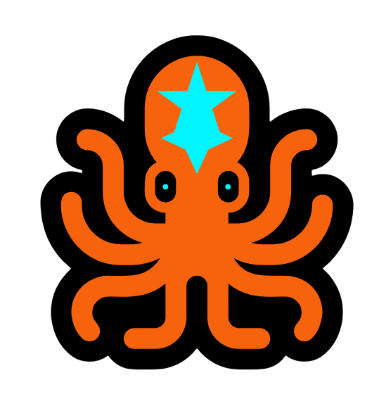

An Opensource agent built to deep-dive and analyze repositories directly from your terminal.
Mylo isn't just another coding agent. His real mission is to make the millions of open-source projects on the internet easy to understand and actually useful again. He is created to solve one of the biggest headaches in modern programming: using code libraries and packages we don't fully understand. Mylo dives deep to show you exactly what each library do and how to use them properly. This will help to use libraries more effectively enabling you to build better software with peace of mind.
With his multiple tentacles, Mylo effortlessly tracks down repositories of your need and reveals their deep, underlying file structure. Ask questions to Mylo to get a general understanding about the repository
Mylo doesn't just look for repositories, he understands it. He can fetch and analyze any file from a repository instantly. He will write those files straight to your local disk if you wanted. Just ask your questions; Mylo will answer it.
If analysing entire file is slow to you, Mylo also comes with tools that utilises AST of the file, allowing the agent to understand the code quicker
Talk to Mylo naturally right from your command line using your choice of AI providers. To keep things honest, Mylo displays your exact token usage for individual query, as well as your overall total. No surprise token count, just clear real-time tracking.
Mylo is under your control. Personalize his style by changing his core system prompt in any way you want. Also Mylo allows you choose the maximum token given as the context; and automatically trims the context accordingly to maximize efficiency. (Check out the docs to learn more).
Mylo utilises python's tree sitter package. Therefore, currently the AST tools only support 16 languages.
• Supported Languages:- Python, Go, Javascript, Typescript, Lua, Java, Rust, Kotlin, Scala, C, C++, C#, Ruby, Php, Dart, Swift
On initial launch, Mylo automatically creates a ~/mylo-config directory in your home folder with your .env and SYSTEM_PROMPT.md files. You can modify the system prompt by navigating to the file ~/mylo-config/SYSTEM_PROMPT.md
~/mylo-config/
• Edit SYSTEM_PROMPT.md to personalise Mylo
• .env Consist your model profile, api keys and Github, Gitlab tokens. (to learn more about model profiles, read docs.)